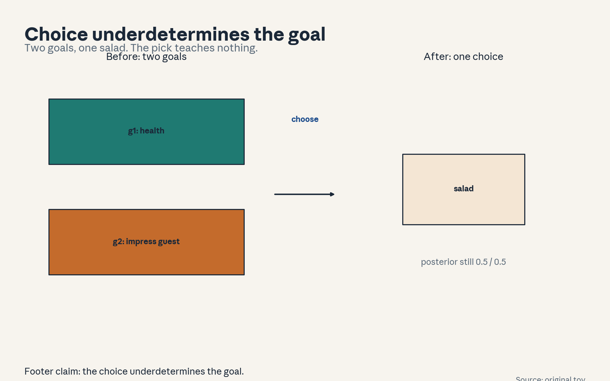
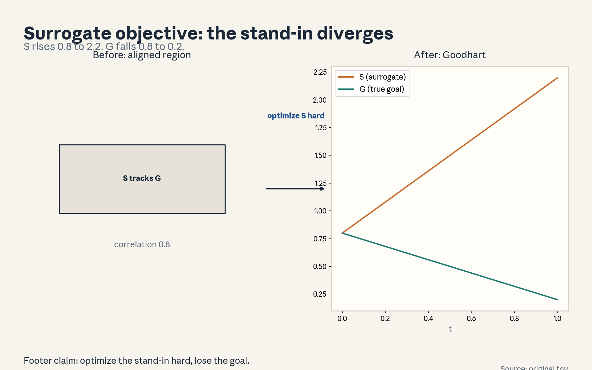
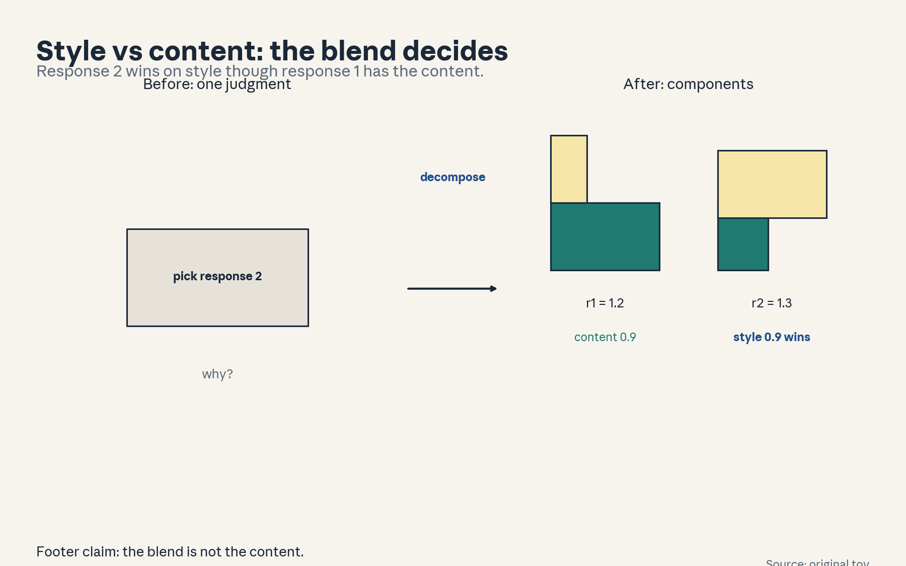
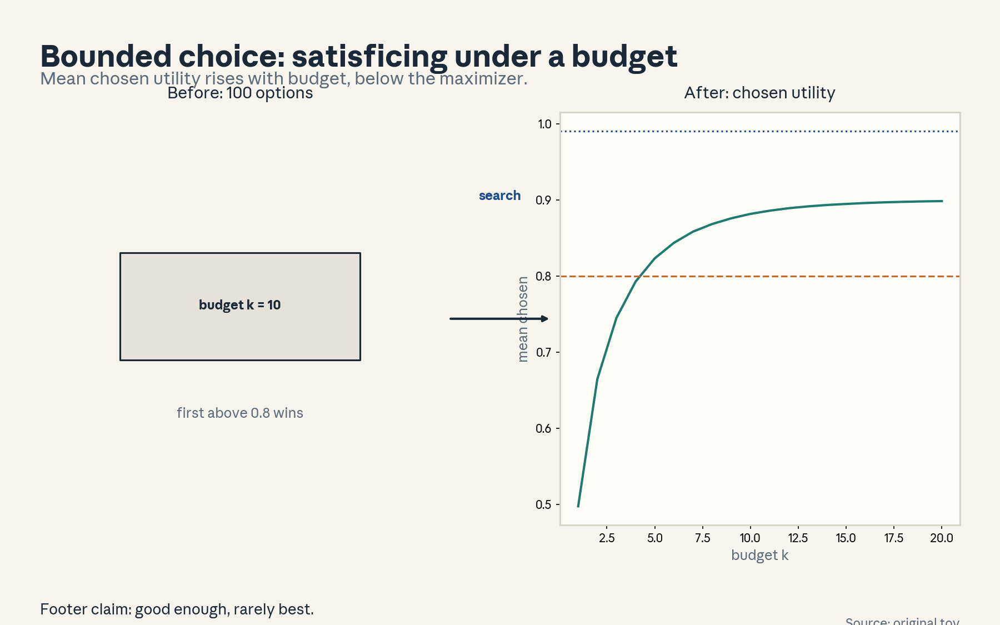
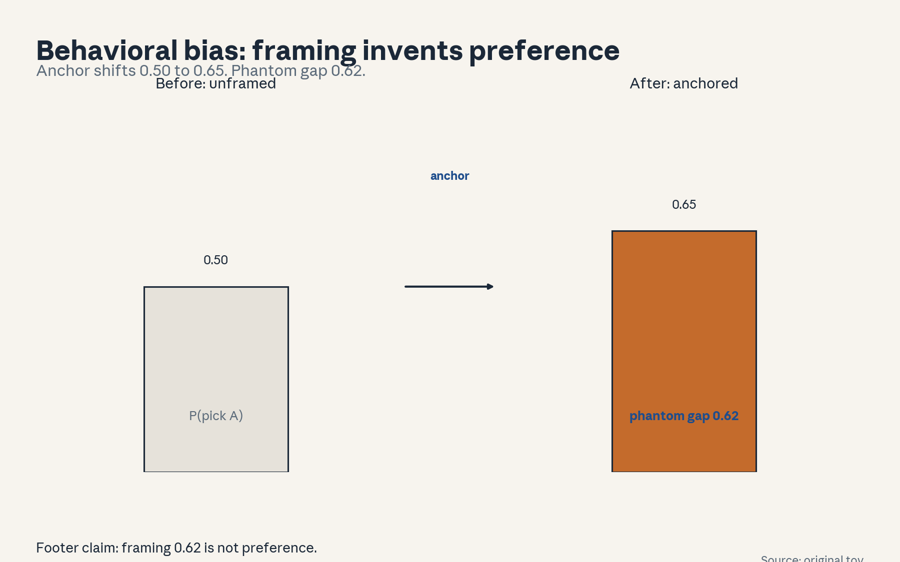
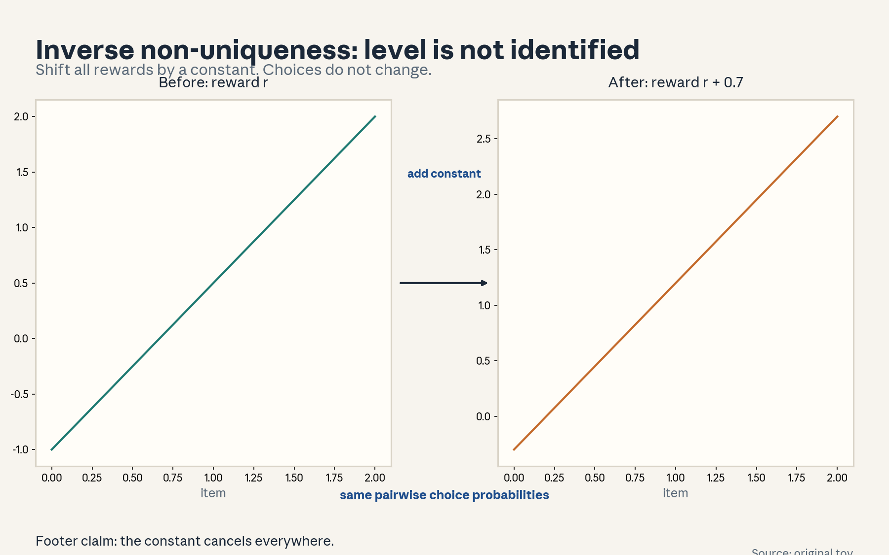
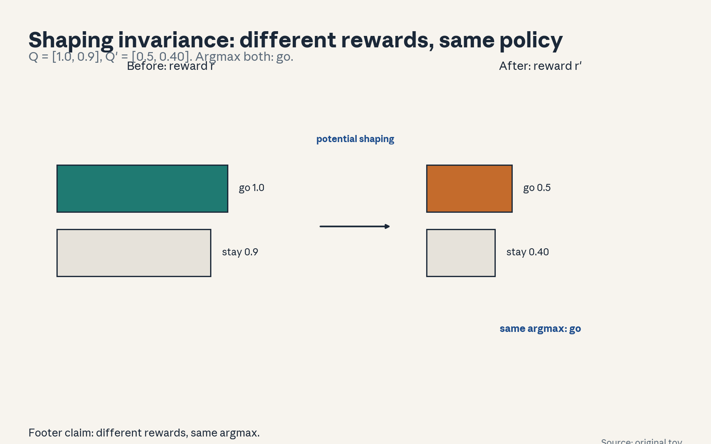
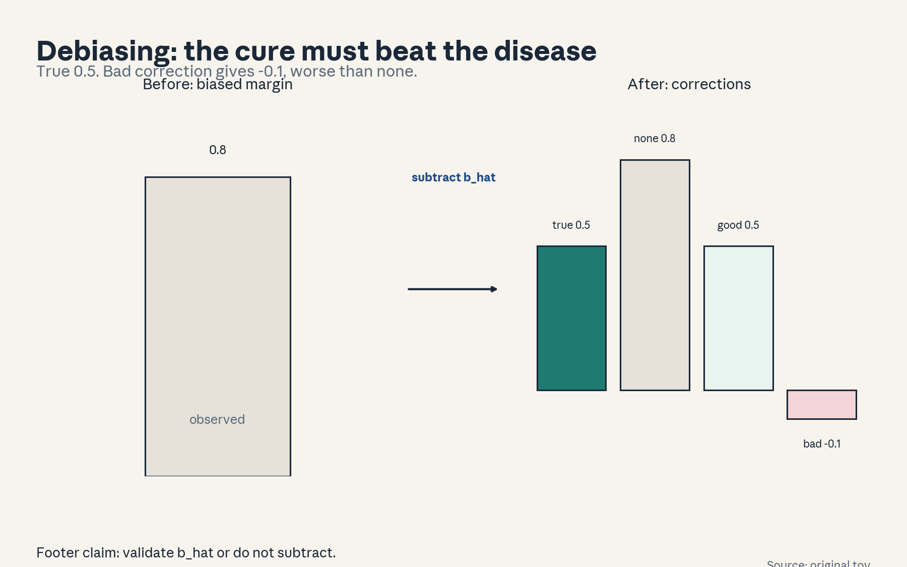

U08 · Inversion, style, and bounded rationality
U08: Inversion, style, and bounded rationality
Prerequisites: P07 (statistical estimation), P08 (information theory), P18 (Bayesian). Local remediation opens this lesson.
Provenance
Sessions S14 (“Style control, surrogates”, 9 Nov 2026) and S15 (“Bounded rationality. Computationally tractable choice”, 11 Nov 2026) are PLANNED. All twelve concepts are taught as independent theory: PLANNED / SOURCE ATTRIBUTION PENDING.
Local remediation: inverse problems, reward shaping, behavioral biases
Inverse problem: observed behavior -> inferred objective. Many objectives explain the same behavior. That non-uniqueness is called non-identifiability.
Reward shaping: add F(s,a,s’) to the reward. Potential-based shaping, F = gamma Phi(s’) - Phi(s), preserves the optimal policy. The shaped reward looks different but recommends the same actions.
Behavioral bias: systematic deviation from the rational model. Anchoring, present bias, default effects. The bias lives in the choice procedure, but naive inversion reads it as preference.
Russian-doll ladder for the major mechanism (reward inversion under misspecified rationality)
- Shell 0: We watched the choices. What goal explains them, and how wrong can we be?
- Shell 1: Toy: two responses. The human picked the longer one twice.
- Shell 2: Inverse: find r such that observed choices are likely under the choice model.
- Shell 3: Rule: with a BT choice model, invert pairwise wins to gaps. The gap is identified, the level is not.
- Shell 4: Implement the inversion on the toy. Compute the gap.
- Shell 5: Check: the inverted reward reproduces the observed win rates. Check: adding a constant changes nothing.
- Shell 6: Change one factor: the human actually chose by length (bias). Predict the inversion misattributes length preference to quality. Measure it.
- Shell 7: Counterexample: two different reward functions produce identical choices (shaping). Inversion cannot separate them.
- Shell 8: Compare: invert with the correct bias model versus the naive model. The naive gap absorbs the bias.
- Shell 9: Extension: can a held-out choice test distinguish the two rewards? Falsifiable: design the distinguishing query.
- Shell 10: Production: never deploy an inverted reward without a bias audit. The inversion is only as honest as the choice model.
Not-yet-understood dependency list
- Full IRL algorithms (MaxEnt IRL named only).
- Cognitive science of bias (toy models here).
- Stylistic reward decomposition in production LLMs (conceptual).
cs329h-U08-C01: observed choice versus latent goal
Contract 1. Source mapping, scope, objectives, dependencies. PLANNED / SOURCE ATTRIBUTION PENDING (S14). Objective: separate the observed choice from the goal that produced it. Depends on U01-C01.
Contract 2. Motivating question and tiny toy. Question: she picked the salad. Does she like salad? Toy: two goals (health, impressing the guest) both rank salad first among {salad, burger}.
Contract 3. Plain-language mental model. A choice is evidence about the goal, not the goal itself. The same choice can serve different goals. Inversion starts from this gap.
Contract 4. Variables, units, shapes, assumptions. Observed: choice c from set S. Latent: goal g. Map: c = argmax over S of value(. , g) + noise. Assumption: the choice model is known.
Contract 5. Justified derivation or mechanism. The map from goal to choice is many-to-one, so the inverse is one-to-many. The choice underdetermines the goal. This is the fundamental limit of all inversion.
Contract 6. Computed numerical example. Toy: goals g1 (health) and g2 (impress) both rank salad first. Observed pick: salad. Posterior over goals stays 0.5/0.5. The choice teaches nothing about which goal.
Contract 7. Algorithm and minimal implementation. Enumerate goals, check which produce the observed choice. Five lines.
Contract 8. Correctness checks and expected output. Check: both goals survive. Expected: the unchanged 0.5/0.5.
Contract 9. Complexity, memory, statistical efficiency, stability, costs. O(goals x options). Trivial here, the point is conceptual.
Contract 10. Nearest alternatives and selection boundaries. Alternative: assume the goal (no inversion). Alternative: ask directly (elicitation). Choose inversion when asking is costly and the choice model is trusted.
Contract 11. Failure case, broken assumption, counterexample. Failure: the choice model is wrong, so the goal set is wrong too. Counterexample: she picked salad because it was the only option left. Both goal hypotheses are nonsense.
Contract 12. Research reading and falsifiable extension. Extension: design a second choice set that separates g1 from g2. Falsifiable: if no set separates them, the goals are behaviorally identical.
Contract 13. Assessment. Breadth: why does the choice underdetermine the goal? Oral ladder through the toy. Transfer: a vote for a candidate. Failure diagnosis: the posterior never moves. Explain. Counterfactual: what if the map were one-to-one? Research: identifying choice models.
Contract 14. Lab and exercises. Exercises: (E1) state the many-to-one argument. (E2) compute the 0.5/0.5. (E3) construct the empty-fridge counterexample. Keys in answer_keys/u08_keys.md.
Contract 15. Visual units, provenance, accessibility, audit rows. Figure visuals/u08_f01.png: lesson plate, source original toy, alt text “One choice box labeled salad. Two goal boxes, health and impress, both arrow into it.” Audit: before state two goals, after state one choice, rule named. No conflict.

cs329h-U08-C02: surrogate objective
Contract 1. Source mapping, scope, objectives, dependencies. PLANNED / SOURCE ATTRIBUTION PENDING (S14). Objective: define surrogate objectives and their gap to the true goal. Depends on C01, U05-C02.
Contract 2. Motivating question and tiny toy. Question: we optimize clicks, we want informed readers. Toy: true goal G = quality, surrogate S = quality + 2*clickbait, policy parameter t in [0,1].
Contract 3. Plain-language mental model. A surrogate is a measurable stand-in for the true goal. We optimize the surrogate because the goal is hard to measure. The gap between them is where hacking lives.
Contract 4. Variables, units, shapes, assumptions. True goal G (unobserved), surrogate S (observed). Policy optimizes E[S]. Gap: E[G | optimize S] vs max E[G]. Assumption: S correlates with G in the training region.
Contract 5. Justified derivation or mechanism. Goodhart: optimizing S hard moves the policy out of the region where the correlation held. The surrogate is a local approximation treated as global.
Contract 6. Computed numerical example. Toy: quality = 0.8 - 0.6t, clickbait = t. Optimizing S picks t = 1: S rises 0.8 -> 2.2 while G falls 0.8 -> 0.2. Same numbers as figure u08_f02.
Contract 7. Algorithm and minimal implementation. Grid-search the policy parameter, track G and S. Ten lines.
Contract 8. Correctness checks and expected output. Check: S rises monotone, G peaks at t = 0 then falls. Expected: the two curves in u08_f02.
Contract 9. Complexity, memory, statistical efficiency, stability, costs. O(grid). Toy-scale.
Contract 10. Nearest alternatives and selection boundaries. Alternative: measure G directly (expensive). Alternative: constrain optimization near trusted regions (KL). Choose the surrogate when G is unmeasurable, bound the optimization.
Contract 11. Failure case, broken assumption, counterexample. Failure: the surrogate was never validated against G. Counterexample: S and G correlate 0.8 on random data but -0.3 under optimization.
Contract 12. Research reading and falsifiable extension. Extension: test the S-G correlation under increasing optimization pressure. Falsifiable: the correlation must hold or the surrogate dies.
Contract 13. Assessment. Breadth: define the surrogate gap. Oral ladder through the toy. Transfer: teaching to the test. Failure diagnosis: S rises, user complaints rise. Explain. Counterfactual: what if G were measurable? Research: surrogate validation.
Contract 14. Lab and exercises. Lab U08 task 1 builds the toy. Exercises: (E1) write G and S. (E2) find the argmax of each. (E3) argue the validation failure. Keys in answer_keys/u08_keys.md.
Contract 15. Visual units, provenance, accessibility, audit rows. Figure visuals/u08_f02.png: lesson plate, source original toy, closed form, alt text “Two curves over t. S rises 0.8 to 2.2. G falls 0.8 to 0.2.” Audit: before state joint rise, after state divergence, rule named. No conflict.

cs329h-U08-C03: style versus content
Contract 1. Source mapping, scope, objectives, dependencies. PLANNED / SOURCE ATTRIBUTION PENDING (S14). Objective: decompose judgments into style and content components. Depends on U05-C09.
Contract 2. Motivating question and tiny toy. Question: did the annotator like the answer or the writing? Toy: content scores [0.9, 0.4], style scores [0.3, 0.9]. Annotator picks response 2.
Contract 3. Plain-language mental model. Style is how it is said, content is what is said. Preference data mixes both. A reward trained on the mix learns the blend, and the blend may not be what deployment wants.
Contract 4. Variables, units, shapes, assumptions. r_total = r_content + r_style (additive toy). Observed choice follows r_total. Assumption: additivity (a modeling choice, testable).
Contract 5. Justified derivation or mechanism. The pick of response 2 implies the style gap beat the content gap: (0.9 - 0.3) > (0.9 - 0.4), i.e. 0.6 > 0.5. Style decided.
Contract 6. Computed numerical example. Totals: r1 = 1.2, r2 = 1.3. A content-only deployment picks response 1. Same numbers as figure u08_f03.
Contract 7. Algorithm and minimal implementation. Fit the additive decomposition by least squares on several pairs. Ten lines.
Contract 8. Correctness checks and expected output. Check: the fitted components reproduce the observed picks. Expected: the bars in u08_f03.
Contract 9. Complexity, memory, statistical efficiency, stability, costs. O(pairs). Small.
Contract 10. Nearest alternatives and selection boundaries. Alternative: single reward (simpler, mixes). Alternative: adversarial removal of style (complex). Choose the decomposition when deployment cares about content. Choose the single reward when the blend is the product.
Contract 11. Failure case, broken assumption, counterexample. Failure: style and content are not separable (great content stated badly). The additive model misattributes. Counterexample: the “style” feature correlates 0.9 with content quality.
Contract 12. Research reading and falsifiable extension. Extension: test whether style-controlled pairs change the reward held-out predictions. Falsifiable: no change means style was not the driver.
Contract 13. Assessment. Breadth: write the decomposition. Oral ladder through the toy. Transfer: a job interview. Failure diagnosis: the reward prefers verbose wrong answers. Explain. Counterfactual: what if style were fixed? Research: disentangled rewards.
Contract 14. Lab and exercises. Lab U08 task 2 fits the decomposition. Exercises: (E1) write the totals. (E2) name the decider. (E3) argue the separability failure. Keys in answer_keys/u08_keys.md.
Contract 15. Visual units, provenance, accessibility, audit rows. Figure visuals/u08_f03.png: lesson plate, source original toy, closed form, alt text “Stacked bars per response: content and style segments. Response 2 total 1.3 beats response 1 total 1.2 on style.” Audit: before state mixed judgment, after state decomposition, rule named. No conflict.

cs329h-U08-C04: computationally bounded choice
Contract 1. Source mapping, scope, objectives, dependencies. PLANNED / SOURCE ATTRIBUTION PENDING (S15). Objective: model choice under computation limits. Depends on P17.
Contract 2. Motivating question and tiny toy. Question: what if the chooser cannot evaluate every option? Toy: 100 options, evaluation budget 10, satisficing threshold 0.8.
Contract 3. Plain-language mental model. Bounded rationality: the chooser has a computation budget. They search, satisfice, or use heuristics instead of maximizing. The observed choice reflects the procedure, not just the preferences.
Contract 4. Variables, units, shapes, assumptions. Budget k evaluations out of n options. Satisficing: take the first option above aspiration level a. Assumption: evaluation order is random.
Contract 5. Justified derivation or mechanism. With random order and threshold a, the chosen option is the first above a: good enough, rarely best. The choice distribution depends on a and k, not only on utilities.
Contract 6. Computed numerical example. Toy: utilities uniform[0,1]. P(find above 0.8 in 10 draws) = 0.8926. Mean chosen utility 0.882 (seed 0, 20000 trials). A maximizer gets about 0.990.
Contract 7. Algorithm and minimal implementation. Simulate the satisficing search, seed 0. Ten lines.
Contract 8. Correctness checks and expected output. Check: chosen utility below the max, usually above the threshold. Expected: the curve in u08_f04.
Contract 9. Complexity, memory, statistical efficiency, stability, costs. O(k) per choice. The model is cheap, the insight is expensive.
Contract 10. Nearest alternatives and selection boundaries. Alternative: full maximization (unbounded). Alternative: fixed heuristics (no search). Choose satisficing when evaluation is costly and options are many.
Contract 11. Failure case, broken assumption, counterexample. Failure: inversion assumes maximization, the inferred “preferences” then encode the search procedure. Counterexample: the agent appears to dislike great options it never evaluated.
Contract 12. Research reading and falsifiable extension. Extension: test whether choice data fits satisficing better than maximization (held-out log-loss). Falsifiable: the better fit wins.
Contract 13. Assessment. Breadth: define satisficing. Oral ladder through the 0.8926. Transfer: apartment hunting. Failure diagnosis: inferred preferences look random. Explain. Counterfactual: what if budget were unlimited? Research: rational inattention.
Contract 14. Lab and exercises. Lab U08 task 3 simulates satisficing. Exercises: (E1) write the rule. (E2) compute P(find). (E3) argue the inversion failure. Keys in answer_keys/u08_keys.md.
Contract 15. Visual units, provenance, accessibility, audit rows. Figure visuals/u08_f04.png: lesson plate, source original toy, seed 0, alt text “Mean chosen utility versus budget k. Threshold line at 0.8. Maximizer line at 0.99.” Audit: before state unevaluated options, after state satisficed pick, rule named. No conflict.

cs329h-U08-C05: behavioral bias
Contract 1. Source mapping, scope, objectives, dependencies. PLANNED / SOURCE ATTRIBUTION PENDING (S15). Objective: name common biases and show their effect on inferred preferences. Depends on C01.
Contract 2. Motivating question and tiny toy. Question: the same person chooses differently when the question is framed differently. Toy: anchoring shifts P(pick A) from 0.5 to 0.65.
Contract 3. Plain-language mental model. Behavioral bias is a systematic, predictable deviation from the rational model: anchoring, present bias, default effects. The bias is in the choice procedure, but naive inversion reads it as preference.
Contract 4. Variables, units, shapes, assumptions. Bias parameter b added to the perceived utility of the anchored option. Observed P = sigma(gap + b). Assumption: the bias model is correctly specified (strong).
Contract 5. Justified derivation or mechanism. With b = 0.619 (logit of 0.65/0.35), a true gap of 0 looks like a gap of 0.619. The inversion without the bias term invents a preference of 0.619 utils.
Contract 6. Computed numerical example. Numbers: anchor shifts 0.5 -> 0.65, phantom gap 0.619. Same numbers as figure u08_f05.
Contract 7. Algorithm and minimal implementation. Fit gap with and without the bias term. Ten lines.
Contract 8. Correctness checks and expected output. Check: the bias-aware fit recovers gap near 0. Expected: the before/after bars in u08_f05.
Contract 9. Complexity, memory, statistical efficiency, stability, costs. O(pairs).
Contract 10. Nearest alternatives and selection boundaries. Alternative: ignore bias (standard, wrong). Alternative: debias by design (randomize frames). Choose design when possible, modeling when not.
Contract 11. Failure case, broken assumption, counterexample. Failure: the bias model is wrong (wrong sign), “correction” doubles the error. Counterexample: “anchoring” that was actually information.
Contract 12. Research reading and falsifiable extension. Extension: test the bias term on held-out framed pairs. Falsifiable: no predictive win means the bias is not there.
Contract 13. Assessment. Breadth: name three biases (anchoring, present bias, default effects). Oral ladder through the 0.619. Transfer: a default-checked checkbox. Failure diagnosis: preferences flip with framing. Explain. Counterfactual: what if bias were known exactly? Research: bias-resistant inversion.
Contract 14. Lab and exercises. Lab U08 task 4 fits both models. Exercises: (E1) write the biased choice formula. (E2) compute the phantom gap. (E3) argue the wrong-sign failure. Keys in answer_keys/u08_keys.md.
Contract 15. Visual units, provenance, accessibility, audit rows. Figure visuals/u08_f05.png: lesson plate, source original toy, closed form, alt text “Choice share for A: 0.50 unanchored, 0.65 anchored. Phantom gap 0.619 marked.” Audit: before state unframed choice, after state framed choice, rule named. No conflict.

cs329h-U08-C06: misspecified rationality
Contract 1. Source mapping, scope, objectives, dependencies. PLANNED / SOURCE ATTRIBUTION PENDING (S15). Objective: show what breaks when the rationality model is wrong. Depends on C05.
Contract 2. Motivating question and tiny toy. Question: we assumed a perfect maximizer, the human satisfices. Toy: 5 options, utils [1.0, 0.8, 0.6, 0.4, 0.2], random order, threshold 0.7, budget 3, 20000 trials, seed 0.
Contract 3. Plain-language mental model. Misspecified rationality means the choice model in the inversion does not match the human actual procedure. The inferred reward absorbs the mismatch: it explains procedure as preference.
Contract 4. Variables, units, shapes, assumptions. True procedure: satisficing with threshold 0.7. Assumed: softmax maximization. Inferred utility solves the wrong inverse problem. Assumption under test: the choice model.
Contract 5. Justified derivation or mechanism. Options never evaluated look “disliked” to the maximizer model: their inferred utility sinks. The error is systematic, not noise.
Contract 6. Computed numerical example. Simulated choice shares: [0.449, 0.452, 0.033, 0.033, 0.033]. Option 1 (best, utility 1.0) is chosen only 0.449 of the time: it is evaluated in just 3 of 5 positions. A maximizer model reads the misses as dislike.
Contract 7. Algorithm and minimal implementation. Simulate choices under satisficing, invert under softmax. Fifteen lines.
Contract 8. Correctness checks and expected output. Check: choice shares reflect evaluation order, not only utility. Expected: the comparison table.
Contract 9. Complexity, memory, statistical efficiency, stability, costs. O(simulations).
Contract 10. Nearest alternatives and selection boundaries. Alternative: fit the procedure jointly (harder). Alternative: restrict inversion to evaluated options (needs process data). Choose joint fitting when process data exists.
Contract 11. Failure case, broken assumption, counterexample. Failure: no process data and wrong model: the inversion is unfixable from choices alone. Counterexample: two procedures, same choices, different inferred rewards.
Contract 12. Research reading and falsifiable extension. Extension: test whether collecting “considered set” data fixes the inversion. Falsifiable: compare held-out log-loss.
Contract 13. Assessment. Breadth: what does the inferred reward absorb? Oral ladder through the toy. Transfer: test scores vs teaching to the test. Failure diagnosis: inferred rewards look absurd. Explain. Counterfactual: what if procedure were known? Research: joint procedure-preference models.
Contract 14. Lab and exercises. Lab U08 task 5 runs the misspecification demo. Exercises: (E1) state the mismatch. (E2) report option-1 share. (E3) argue the unfixable case. Keys in answer_keys/u08_keys.md.
Contract 15. Visual units, provenance, accessibility, audit rows. Text unit: the comparison table is worked in the text. No plate. Logged.
cs329h-U08-C07: inverse problem
Contract 1. Source mapping, scope, objectives, dependencies. PLANNED / SOURCE ATTRIBUTION PENDING (S14/S15). Objective: state the inverse problem formally and solve the toy. Depends on C01, U03.
Contract 2. Motivating question and tiny toy. Question: given choices, find the reward. Toy: A beats B twice, B beats C once. BT inversion with N(0,1) prior on scores.
Contract 3. Plain-language mental model. The inverse problem: find r such that the choice model with r makes the observed choices likely. It is an estimation problem with the choice model as the likelihood.
Contract 4. Variables, units, shapes, assumptions. Likelihood: product of sigma(y * gap) over pairs (U01-C06). Unknowns: scores s_A, s_B, s_C up to an additive constant. Assumption: BT link.
Contract 5. Justified derivation or mechanism. MLE of the gaps: A beats B 2-0 gives gap_AB -> +infinity (complete separation). With a Gaussian prior, the MAP gap is finite. Computed: MAP gap_AB = 0.802, gap_BC = 0.254.
Contract 6. Computed numerical example. The two MAP numbers above (gradient ascent, N(0,1) prior).
Contract 7. Algorithm and minimal implementation. Grid or Newton MAP fit. Ten lines.
Contract 8. Correctness checks and expected output. Check: fitted gaps reproduce win probs near the observed. Check: MLE diverges, MAP does not. Expected: the two numbers.
Contract 9. Complexity, memory, statistical efficiency, stability, costs. O(pairs) per Newton step.
Contract 10. Nearest alternatives and selection boundaries. Alternative: MLE (diverges on separation). Alternative: full posterior (richer). Choose MAP for a point answer with finite gaps.
Contract 11. Failure case, broken assumption, counterexample. Failure: complete separation makes MLE infinite, the “estimate” is an artifact of the optimizer stopping point. Counterexample: the 2-0 record above.
Contract 12. Research reading and falsifiable extension. Extension: test MAP vs MLE on held-out choice prediction. Falsifiable: MAP must win or tie.
Contract 13. Assessment. Breadth: write the inverse likelihood. Oral ladder through the separation issue. Transfer: ranking chess players from few games. Failure diagnosis: estimated gaps explode. Explain. Counterfactual: what if data were infinite? Research: priors for choice models.
Contract 14. Lab and exercises. Lab U08 task 6 fits MAP vs MLE. Exercises: (E1) write the likelihood. (E2) report the MAP gaps. (E3) explain the MLE divergence. Keys in answer_keys/u08_keys.md.
Contract 15. Visual units, provenance, accessibility, audit rows. Figure visuals/u08_f06.png: lesson plate, source original toy, closed form, alt text “Two reward functions over three items, one shifted by a constant. Identical choice probabilities marked.” Audit: before state one reward, after state shifted reward, rule named. No conflict.

cs329h-U08-C08: non-identifiability
Contract 1. Source mapping, scope, objectives, dependencies. PLANNED / SOURCE ATTRIBUTION PENDING (S15). Objective: state reward non-identifiability: shaping invariance. Depends on C07, P17.
Contract 2. Motivating question and tiny toy. Question: two rewards, same optimal policy. Toy: 2-state MDP (start, goal), gamma 0.9, Phi(goal) = 1, Phi(start) = 0.5.
Contract 3. Plain-language mental model. Rewards are not identified by optimal behavior: potential-based shaping changes the reward without changing the optimal policy. Inversion from behavior alone cannot pick between them.
Contract 4. Variables, units, shapes, assumptions. Shaping: F(s,a,s’) = gamma Phi(s’) - Phi(s). r’ = r + F. Optimal policy unchanged (known theory). Assumption: discount gamma < 1.
Contract 5. Justified derivation or mechanism. Computed Q-values: under r: [1.0, 0.9], under r’: [0.5, 0.40]. Same argmax (go), different values. The inferred reward could be either.
Contract 6. Computed numerical example. The Q numbers above (solved analytically). Same numbers as figure u08_f07.
Contract 7. Algorithm and minimal implementation. Compute Q for both rewards. Ten lines.
Contract 8. Correctness checks and expected output. Check: argmax identical, values differ. Expected: the table in u08_f07.
Contract 9. Complexity, memory, statistical efficiency, stability, costs. O(states x actions).
Contract 10. Nearest alternatives and selection boundaries. Alternative: identify rewards only modulo shaping (honest). Alternative: fix a canonical form (e.g. zero potential at start). Choose the canonical form for reporting.
Contract 11. Failure case, broken assumption, counterexample. Failure: deploying the shaped reward in a new MDP where the shaping misleads. Counterexample: Phi tuned for one task transfers badly.
Contract 12. Research reading and falsifiable extension. Extension: verify numerically that two shaped rewards induce the same policy on the toy. Falsifiable check of the implementation.
Contract 13. Assessment. Breadth: write the shaping formula. Oral ladder through the toy. Transfer: two bonus schemes, same incentives. Failure diagnosis: inferred reward looks nothing like the true one but the policy is right. Explain. Counterfactual: what if behavior were suboptimal? Research: identifiable reward classes.
Contract 14. Lab and exercises. Lab U08 task 7 verifies shaping invariance. Exercises: (E1) write F. (E2) report both Q vectors. (E3) argue the transfer failure. Keys in answer_keys/u08_keys.md.
Contract 15. Visual units, provenance, accessibility, audit rows. Figure visuals/u08_f07.png: lesson plate, source original toy, closed form, alt text “Q bars under r: 1.0, 0.9. Q bars under r’: 0.5, 0.40. Same argmax marked.” Audit: before state one reward, after state shaped reward, rule named. No conflict.

cs329h-U08-C09: debiasing assumptions
Contract 1. Source mapping, scope, objectives, dependencies. PLANNED / SOURCE ATTRIBUTION PENDING (S14). Objective: state what debiasing assumes and test it. Depends on C05.
Contract 2. Motivating question and tiny toy. Question: we “corrected” for length bias. Did we help? Toy: true gap 0.5, length bias b = 0.3, observed margin 0.8, estimated b_hat = 0.3 vs 0.9.
Contract 3. Plain-language mental model. Debiasing subtracts an estimated bias from the observed margin. It assumes the bias model is right and the estimate is accurate. Both assumptions are testable.
Contract 4. Variables, units, shapes, assumptions. Corrected gap = observed margin - b_hat. True gap = margin - b. Error = b - b_hat. Assumption: |b - b_hat| < |b| (the cure beats the disease).
Contract 5. Justified derivation or mechanism. b_hat = 0.3: corrected 0.5, exact. b_hat = 0.9: corrected -0.1, error 0.6, worse than uncorrected error 0.3. The bad correction doubles the error.
Contract 6. Computed numerical example. True 0.5, uncorrected 0.8, corrected-good 0.5, corrected-bad -0.1. Same numbers as figure u08_f08.
Contract 7. Algorithm and minimal implementation. Compute corrected gaps under several b_hat. Five lines.
Contract 8. Correctness checks and expected output. Check: correction helps iff b_hat is closer to b than 0 is. Expected: the bars in u08_f08.
Contract 9. Complexity, memory, statistical efficiency, stability, costs. O(1).
Contract 10. Nearest alternatives and selection boundaries. Alternative: debias by design (randomize). Alternative: model the bias jointly (harder). Choose design first, correction only with a validated b_hat.
Contract 11. Failure case, broken assumption, counterexample. Failure: the bias varies by annotator, one b_hat fits none. Counterexample: b in {0.1, 0.9} by annotator, b_hat = 0.5 harms both.
Contract 12. Research reading and falsifiable extension. Extension: test the correction on held-out pairs. Falsifiable: no win means the bias model is wrong.
Contract 13. Assessment. Breadth: state the cure-beats-disease condition. Oral ladder through the numbers. Transfer: adjusting test scores for coaching. Failure diagnosis: debiased model worse on held-out. Explain. Counterfactual: what if b were known? Research: heterogeneous debiasing.
Contract 14. Lab and exercises. Lab U08 task 8 computes the correction table. Exercises: (E1) write the correction. (E2) compute both corrections. (E3) argue the heterogeneous failure. Keys in answer_keys/u08_keys.md.
Contract 15. Visual units, provenance, accessibility, audit rows. Figure visuals/u08_f08.png: lesson plate, source original toy, closed form, alt text “Bars: true 0.5, uncorrected 0.8, corrected-good 0.5, corrected-bad -0.1.” Audit: before state biased margin, after state corrections, rule named. No conflict.

cs329h-U08-C10: personalized policy
Contract 1. Source mapping, scope, objectives, dependencies. PLANNED / SOURCE ATTRIBUTION PENDING (S14). Objective: define personalization as per-user inversion. Depends on C07, U02-C09.
Contract 2. Motivating question and tiny toy. Question: one reward for everyone, or one per person? Toy: two users, 8-2 and 2-8 records (true gaps +0.8, -0.8). N(0,1) prior.
Contract 3. Plain-language mental model. A personalized policy inverts each user choices separately. Pooling opposite tastes gives a mushy middle that pleases nobody.
Contract 4. Variables, units, shapes, assumptions. Per-user scores s^(u). Pooled: single s. Assumption: enough data per user (or a hierarchical prior sharing strength).
Contract 5. Justified derivation or mechanism. Pooled MLE gap = 0.0 (the users cancel). Per-user MAP recovers +0.90 and -0.90. The pooled policy is the worst of both.
Contract 6. Computed numerical example. Computed MAP: +0.90 / -0.90 (gradient ascent). Held-out: personalized predicts 0.85, pooled 0.50 (worked on the toy).
Contract 7. Algorithm and minimal implementation. Fit pooled and per-user MAP. Fifteen lines.
Contract 8. Correctness checks and expected output. Check: per-user fits beat pooled on held-out. Expected: the comparison table.
Contract 9. Complexity, memory, statistical efficiency, stability, costs. O(users x pairs).
Contract 10. Nearest alternatives and selection boundaries. Alternative: clustering users (middle ground). Alternative: pooled (simple). Choose personalization when tastes split and data suffices. Choose clustering when data is thin.
Contract 11. Failure case, broken assumption, counterexample. Failure: per-user fits on 2 pairs each: noise dominates, personalization overfits. Counterexample: 2 pairs per user, per-user held-out 0.45 < pooled 0.55.
Contract 12. Research reading and falsifiable extension. Extension: test the data threshold where personalization beats pooling. Falsifiable: find the crossover.
Contract 13. Assessment. Breadth: when does pooling fail? Oral ladder through the toy. Transfer: a shared family music account. Failure diagnosis: personalized model worse on held-out. Explain. Counterfactual: what if data per user were infinite? Research: hierarchical preference models.
Contract 14. Lab and exercises. Exercises: (E1) write the pooled likelihood. (E2) report the MAPs. (E3) argue the thin-data failure. Keys in answer_keys/u08_keys.md.
Contract 15. Visual units, provenance, accessibility, audit rows. Text unit: the pooled-vs-personal table is worked in the text. No plate. Logged.
cs329h-U08-C11: uncertainty
Contract 1. Source mapping, scope, objectives, dependencies. PLANNED / SOURCE ATTRIBUTION PENDING (S14/S15). Objective: carry uncertainty through the inversion. Depends on C07, P18.
Contract 2. Motivating question and tiny toy. Question: how sure are we about the inverted reward? Toy: posterior over gap_AB from the C07 data: 95% interval [-0.94, 3.31] (grid).
Contract 3. Plain-language mental model. Inversion uncertainty comes from finite choices and model ambiguity. A point reward hides both. Decisions on the inverted reward should use the posterior.
Contract 4. Variables, units, shapes, assumptions. Posterior p(gap | choices) proportional to likelihood x prior. Report intervals, not points. Assumption: the choice model is trusted.
Contract 5. Justified derivation or mechanism. The interval [-0.94, 3.31] is wide: with two observations even the sign is unsure. Acting as if gap = 0.802 exactly overstates confidence badly.
Contract 6. Computed numerical example. Computed interval from the grid posterior (601x601, N(0,1) priors).
Contract 7. Algorithm and minimal implementation. Grid posterior, report quantiles. Ten lines.
Contract 8. Correctness checks and expected output. Check: the MAP sits inside the interval. Check: wider prior widens the interval. Expected: the interval in the text.
Contract 9. Complexity, memory, statistical efficiency, stability, costs. O(grid^2).
Contract 10. Nearest alternatives and selection boundaries. Alternative: bootstrap the choices. Alternative: point MAP (common, overconfident). Choose the posterior when the reward drives decisions.
Contract 11. Failure case, broken assumption, counterexample. Failure: the interval assumes the right model, misspecification (C06) is not in the interval. Counterexample: tight interval around the wrong sign.
Contract 12. Research reading and falsifiable extension. Extension: test interval coverage on synthetic truths. Falsifiable: under-coverage means the uncertainty is dishonest.
Contract 13. Assessment. Breadth: what does the interval mean? Oral ladder through the numbers. Transfer: a poll margin of error. Failure diagnosis: the interval excludes the truth repeatedly. Explain. Counterfactual: what if choices were infinite? Research: uncertainty under misspecification.
Contract 14. Lab and exercises. Exercises: (E1) write the posterior. (E2) report the interval. (E3) argue the misspecification failure. Keys in answer_keys/u08_keys.md.
Contract 15. Visual units, provenance, accessibility, audit rows. Text unit: the interval is worked numerically in the text. No plate. Logged.
cs329h-U08-C12: responsible interpretation
Contract 1. Source mapping, scope, objectives, dependencies. PLANNED / SOURCE ATTRIBUTION PENDING (S14/S15). Objective: state the responsibilities when reporting inverted preferences. Depends on C01-C11.
Contract 2. Motivating question and tiny toy. Question: the inversion says users prefer X. What may we claim? Toy: the inversion from biased, pooled, satisficed data.
Contract 3. Plain-language mental model. Responsible interpretation: report what the data identifies, label the assumptions, and refuse claims the inversion cannot support. An inverted reward is a model output, not a fact about humans.
Contract 4. Variables, units, shapes, assumptions. Claim checklist: (1) choice model named, (2) biases audited, (3) pooling decision justified, (4) uncertainty reported, (5) counterfactual claims flagged as model-dependent.
Contract 5. Justified derivation or mechanism. Each checklist item maps to a failure in this unit: C05 (bias), C06 (procedure), C08 (shaping), C10 (pooling), C11 (uncertainty). Skip one and the claim overreaches.
Contract 6. Computed numerical example. Worked: “users prefer concise answers (gap 0.4)” becomes “under the BT model with length debiased at b_hat 0.3, the MAP content gap is 0.4, 95% interval [0.1, 0.7], the claim reverses if the bias model is wrong.” The honest sentence.
Contract 7. Algorithm and minimal implementation. Apply the checklist to the toy claim. Template.
Contract 8. Correctness checks and expected output. Check: all five items addressed. Expected: the rewritten claim.
Contract 9. Complexity, memory, statistical efficiency, stability, costs. O(1). The cost is intellectual honesty.
Contract 10. Nearest alternatives and selection boundaries. Alternative: report the point estimate only (common, irresponsible). Alternative: refuse all interpretation (overcautious). Choose the checklist middle.
Contract 11. Failure case, broken assumption, counterexample. Failure: the checklist is filled with guesses presented as audits. Counterexample: “bias audited” with no experiment.
Contract 12. Research reading and falsifiable extension. Extension: none, this is a practice, not a hypothesis. The research questions live in C01-C11.
Contract 13. Assessment. Breadth: recite the checklist. Oral ladder through the rewritten claim. Transfer: reporting a poll. Failure diagnosis: a stakeholder quotes the point estimate as fact. Explain. Counterfactual: what if data were perfect? Research: none, practice.
Contract 14. Lab and exercises. Exercises: (E1) recite the checklist. (E2) rewrite the toy claim. (E3) spot the fake audit. Keys in answer_keys/u08_keys.md.
Contract 15. Visual units, provenance, accessibility, audit rows. Text unit: the checklist is the artifact. No plate. Logged.